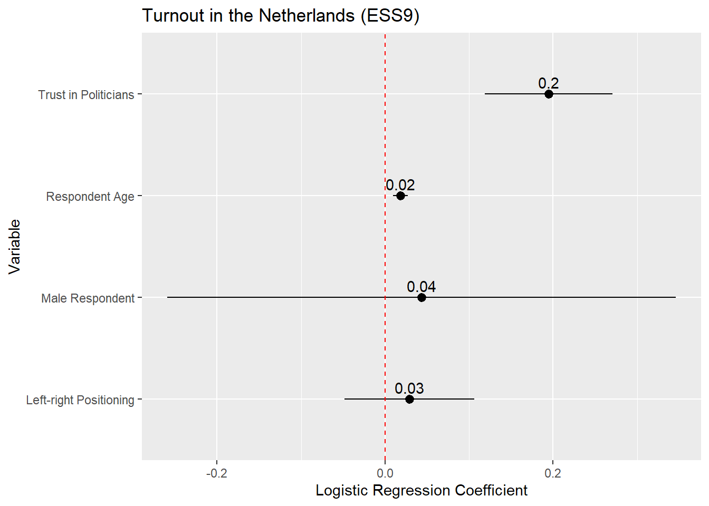
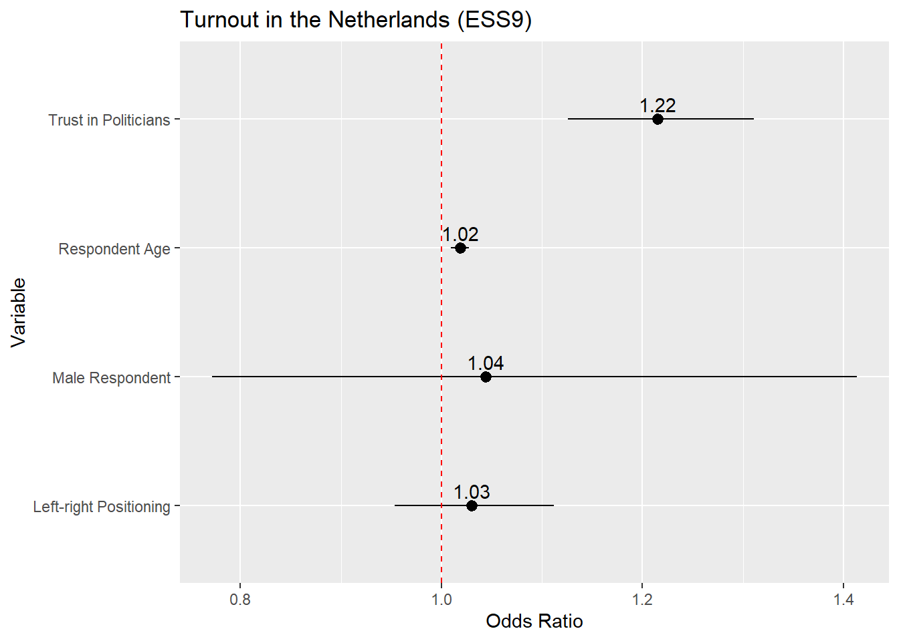
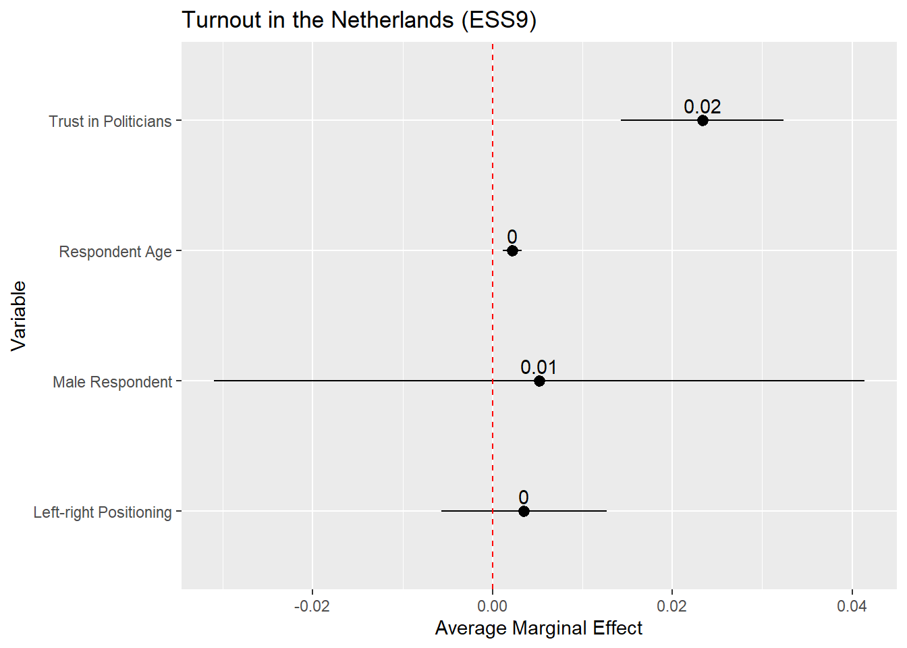
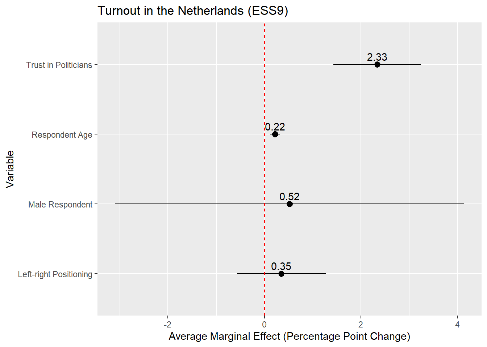
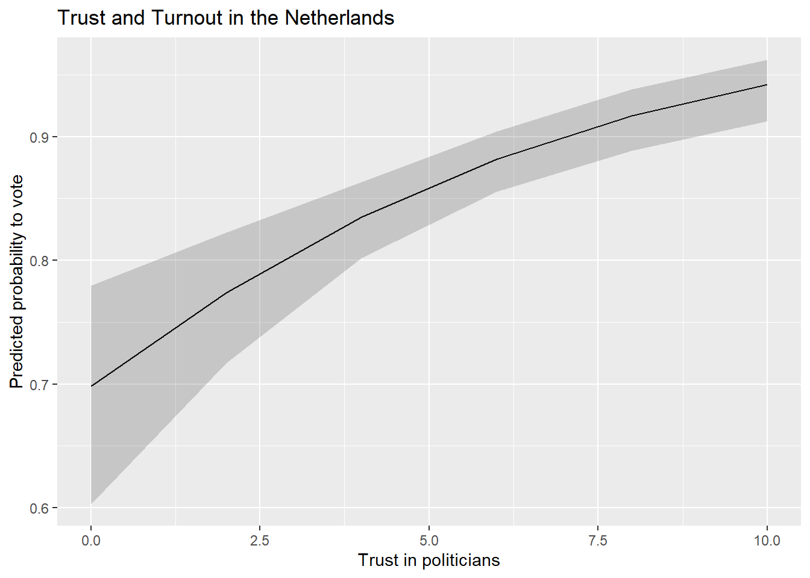
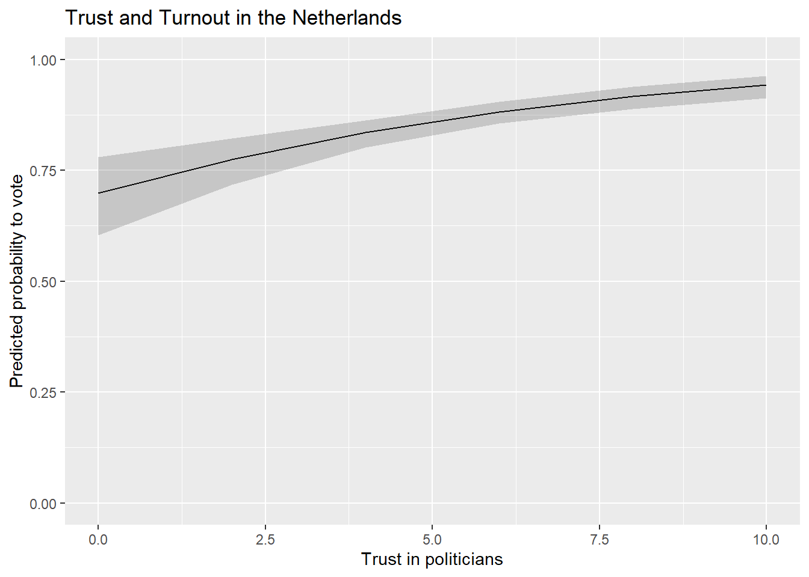
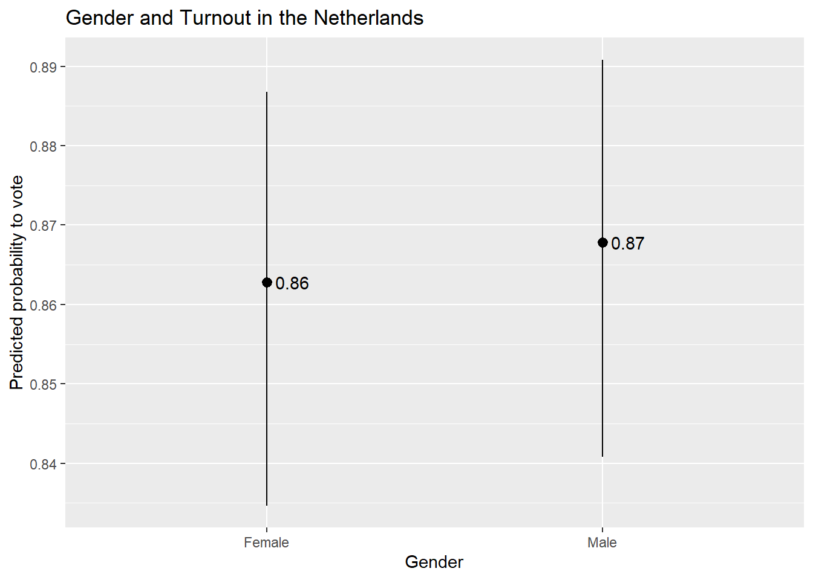

#general packages
library(rio) #loading data
library(tidyverse) #data manipulation and plotting
library(modelsummary) #for creating regression tables
library(rio) #coefficients & odds ratios
library(marginaleffects) #calculating predicted values and AMEs
#Our data
#Data
ESS9NL <- import("ESS9e03, Netherlands.sav")14 Reporting & Presenting Logistic Regressions
We are presumably not performing a logistic regression for our own health. Rather, we perform these analyses because we are interested in examining some politically important question. At this point, though, we need to communicate our results to others and share what we have found. In this chapter we’ll discuss how to structure those reports and provide guidelines for the most common ways of presenting the results of a logistic regression.
Here are the packages that we will use and our data:
Here is an example logistic regression model that we will use throughout the document:
#Data Preparation
ESS9NL <- ESS9NL |>
#Factorize our IVs
mutate(gndr = factorize(gndr), #
vote = factorize(vote)) |>
#Remove Not Eligible to Vote Category from vote
mutate(vote = na_if(vote,"Not eligible to vote")) |>
#Relevel our variables like we did last time
mutate(vote = relevel(vote, "No"),
gndr = relevel(gndr, "Female")) |>
#Drop the extra level in gndr
mutate(gndr = droplevels(gndr))
#Our model
Vote_model_mp <- glm(vote ~ gndr + agea + trstplt + lrscale,
data = ESS9NL, family = "binomial")
#Check the output
summary(Vote_model_mp)- 1
-
This step is necessary for our marginal effects commands below to work given a quirk in this variable (i.e., the presence of a third category with 0 observations); see Chapter 10 . This may not be necessary in your own examples and especially if you use
factor()to create the factor variable rather thanfactorize().
Call:
glm(formula = vote ~ gndr + agea + trstplt + lrscale, family = "binomial",
data = ESS9NL)
Deviance Residuals:
Min 1Q Median 3Q Max
-2.3923 0.4100 0.5029 0.5905 1.0239
Coefficients:
Estimate Std. Error z value Pr(>|z|)
(Intercept) -0.284194 0.380455 -0.747 0.455
gndrMale 0.043281 0.154201 0.281 0.779
agea 0.018349 0.004503 4.075 4.61e-05 ***
trstplt 0.195020 0.038706 5.039 4.69e-07 ***
lrscale 0.029257 0.039306 0.744 0.457
---
Signif. codes: 0 '***' 0.001 '**' 0.01 '*' 0.05 '.' 0.1 ' ' 1
(Dispersion parameter for binomial family taken to be 1)
Null deviance: 1173.9 on 1424 degrees of freedom
Residual deviance: 1135.3 on 1420 degrees of freedom
(248 observations deleted due to missingness)
AIC: 1145.3
Number of Fisher Scoring iterations: 414.1 Reports
A correct report for a logistic model includes:
- A discussion of the direction of the relationship on offer (i.e.: is the relationship between the variables positive or negative?) and an interpretation of what this means drawing upon the coding of the variables in the equation.
- The use of AMEs and predicted probabilities to communicate the substance of this relationship.
- For formal papers: The discussion of a logistic model should be supplemented with references to AMEs and predicted probabilities to discuss the substantive relationship between the predictor and outcome variable.
- A conclusion about the null hypothesis with reference to the p-value and/or confidence interval
- Reports are typically made at 95% (p < 0.05), 99% (p < 0.01), and 99.9% (p < 0.001) levels.1 Coefficients with p-values greater than 0.05 are generally described as not statistically significant or not statistically significant at conventional levels.
- Report at the highest level that is justified by the p-value. For instance:
- If p = 0.04, then p < 0.05 (significant at 95% level)
- If p = 0.004, then p < 0.01 (significant at 99% level)
- If p = 0.0000005, then p < 0.001 (significant at 99.9% level)
- It is not common to go above p < 0.001 (e.g., we would typically not say that p < 0.000001, just p < 0.001). We do not write p < 0.000.
- The confidence interval can also be used to assess statistical significance and communicate the uncertainty surrounding regression estimates although this is more commonly done when reporting AME or odds ratio estimates than for logistic coefficients. If you include the CI in your discussion, then you can place it in parentheses after the coefficient: “The average marginal effect of age is 0.004 (95% CI: -0.006, 0.013)”.
Here is an example for the gndr (binary factor) and trstplt (continuous) variables (AME and odds ratio estimates are calculated in previous chapters).
Report
trstplt: The chances that a person reports turning out to vote increase alongside their trust in politicians. The probability of turning out to vote is expected to increase by 2.3 percentage points, on average, for each one unit increase in trust. The relationship between trust in politicians and turnout is statistically significant (p < 0.001).
gndr (AME example): On average, the probability of turning out to vote is expected to be 4.3 percentage points higher among male than female respondents. However, this difference is not statistically significant (p = 0.78).
gndr (Odds Ratio Example): The odds of turning out to vote among male respondents are 1.04 times greater than the odds among female respondents. However, this difference is not statistically significant (p = 0.78).
Additional notes for writing up results for formal papers:
- The interpretations above focus on just the coefficient and one of its potential transformations (AMEs or odds ratios). A stronger discussion in an academic paper would include a discussion about predicted probabilities to help communicate the potential substantive importance of the relationship on offer. For instance, one could note the predicted probability of a person with a “low” level of trust in politicians vs. one with a “high” level of trust (“high” vs. “low”, where “high” and “low” are based on attributes of the variable under investigation). A plot of predicted probabilities may further enrich these discussions (see Section 14.5).
- If the goal of one’s model is to assess the relationship between a particular independent variable and the dependent variable while adjusting for potential confounding influences, then discussions of the coefficients for “control” variables is generally not needed.
- Discussions of regression results in academic papers seldom focus on the Intercept term.
- Be mindful of the use of “effect” language, e.g., the “effect of variable X”. This brings to mind causal effects (X causes Y), but causal inference requires some strong assumptions to be met. It is typically safest to discuss results as associations or as comparisons.
14.2 Presentation: Regression Tables
We use the modelsummary() command from the modelsummary library to create regression tables. The basic process and syntax is the same as with linear regression models (see Section 8.4). The primary difference comes in how we specify the goodness of fit statistics statistics that will be presented.
modelsummary(Vote_model_mp,
stars = TRUE,
coef_rename = c("(Intercept)" = "Constant",
"agea" = "Age",
"gndrMale" = "Male respondent",
"trstplt"= "Trust in politicians",
"lrscale" = "Left-right positioning"),
gof_map = c("nobs", "logLik"),
title = "Turnout in the Netherlands (ESS9)",
notes = ("Logistic regression coefficients with standard errors in parentheses"))| (1) | |
|---|---|
| + p < 0.1, * p < 0.05, ** p < 0.01, *** p < 0.001 | |
| Logistic regression coefficients with standard errors in parentheses | |
| Constant | -0.284 |
| (0.380) | |
| Male respondent | 0.043 |
| (0.154) | |
| Age | 0.018*** |
| (0.005) | |
| Trust in politicians | 0.195*** |
| (0.039) | |
| Left-right positioning | 0.029 |
| (0.039) | |
| Num.Obs. | 1425 |
| Log.Lik. | -567.653 |
The syntax is the same as with a linear regression except for this:
gof_map = c("nobs", "logLik")-
Several goodness-of-fit measures can be added to the table. Here we only include the model N and the log likelihood. Unfortunately, the Nagelkerke R2 is not one of the options that
modelsummary()natively supports and hence it cannot be automatically added to the table. There is a workaround within the function, but one that goes beyond the scope of this document. Alternatively, we can add the Nagelkerke R2 manually to our table in our word processor (Word, Google Docs, etc.) in a row beneath ‘Log.Lik.’.
14.2.1 Tables with Odds Ratios
The regression table above presented the coefficients from a logistic regression model. We can also have modelsummary() create a table showing the odds ratios. We can do so via two modifications to our syntax above:
modelsummary(Vote_model_mp,
exponentiate = TRUE,
statistic = 'conf.int',
stars = TRUE,
coef_rename = c("(Intercept)" = "Constant",
"agea" = "Age",
"gndrMale" = "Male respondent",
"trstplt"= "Trust in politicians",
"lrscale" = "Left-right positioning"),
gof_map = c("nobs", "logLik"),
title = "Turnout in the Netherlands (ESS9)",
notes = ("Odds ratios with 95% confidence intervals in brackets"))- 1
-
Tells
modelsummary()to exponetiate the logistic coefficients, thus giving us the odds ratios. - 2
-
Tells
modelsummary()to give us the (95%) confidence intervals rather than the default standard errors. CIs are more commonly presented with odds ratios.
| (1) | |
|---|---|
| + p < 0.1, * p < 0.05, ** p < 0.01, *** p < 0.001 | |
| Odds ratios with 95% confidence intervals in brackets | |
| Constant | 0.753 |
| [0.357, 1.588] | |
| Male respondent | 1.044 |
| [0.772, 1.413] | |
| Age | 1.019*** |
| [1.010, 1.028] | |
| Trust in politicians | 1.215*** |
| [1.126, 1.311] | |
| Left-right positioning | 1.030 |
| [0.953, 1.112] | |
| Num.Obs. | 1425 |
| Log.Lik. | -567.653 |
exponentiate = TRUE,-
With this code we ask for the exponentiated coefficients, i.e., the odds ratios.
statistic = 'conf.int'-
This part of the code specifies that we want the confidence intervals and not the default standard errors in the table.
If we are altering the table in this way, then we should also update our notes section to notify the consumers of our table as to what they are seeing as we do in this portion: notes = ("Odds ratios with 95% confidence intervals in brackets").
14.3 Presentation: Coefficient and Odds Ratio Plots
We could present the result of our model via a coefficient plot (with a full regression table in an appendix), much as with a linear regression model. The basic process is described in Section 8.5 . Here is an example based on the model above:
tidy(Vote_model_mp, conf.int = TRUE) |>
filter(term != "(Intercept)") |>
mutate(term = recode(term,
"gndrMale" = "Male Respondent",
"agea" = "Respondent Age",
"trstplt" = "Trust in Politicians",
"lrscale" = "Left-right Positioning")) |>
ggplot(aes(x = estimate, y = term)) +
geom_pointrange(aes(xmin = conf.low, xmax = conf.high)) +
labs(title = "Turnout in the Netherlands (ESS9)",
y = "Variable",
x = "Logistic Regression Coefficient") +
geom_vline(xintercept = 0, linetype = "dashed", color ="red") +
geom_text(aes(label = round(estimate, 2)), vjust = -0.5)- 1
-
We are completing this process all at once by using the
|>operator. However, it is often simpler to break this up into steps: (1) store the results of tidy as a new object; (2) recode thetermvariable in that object and filter our the Intercept; and (3) produce the plot. - 2
- Filters out the Intercept term, which is not typically plotted in a coefficient plot.
- 3
-
Instead of using
recode()on this variable, we could instead convert it into a factor variable usingfactor(). This would enable us to still provide informative labels for each term as well as controlling the order in which the observations are plotted. See the discussion in Tip 8.1.

If we wanted to plot the odds ratios, then the process is identical except that we would (1) ask tidy() to save the odds ratios and (2) update the reference line syntax to place a reference line at 1 rather than 0 given:
tidy(Vote_model_mp, conf.int = TRUE, exponentiate = TRUE) |>
filter(term != "(Intercept)") |>
mutate(term = recode(term,
"gndrMale" = "Male Respondent",
"agea" = "Respondent Age",
"trstplt" = "Trust in Politicians",
"lrscale" = "Left-right Positioning")) |>
ggplot(aes(x = estimate, y = term)) +
geom_pointrange(aes(xmin = conf.low, xmax = conf.high)) +
labs(title = "Turnout in the Netherlands (ESS9)",
y = "Variable",
x = "Odds Ratio") +
geom_vline(xintercept = 1, linetype = "dashed", color ="red") +
geom_text(aes(label = round(estimate, 2)), vjust = -0.5)- 1
-
exponentiate = TRUEneeded to obtain the odds ratios - 2
- Odds ratios are interpreted around 1 rather rather than 0. We should thus put our reference line at 1

14.3.1 Instructions
- It is common to place the coefficient estimate on the x-axis and the variable names on the y-axis. One can reverse this (estimates on the y-axis, variable names on the x-axis) in some circumstances without a problem. However, this can lead to situations where the variable names overlap and become difficult to read. The formatting above avoids this type of issue (although very long labels can still be problematic). Other possible remedies to this type of problem are discussed in helpful blog post.
- The default behavior of
ggplotis to order the coefficients by the alphabetical order of the variable that contains the variable names (namedtermwhen one is plotting the results of a data frame created using thetidy()function as above). This is often less than ideal as the different categories of a categorical variable may be separated from one another (as in the example above). In addition, we may want to call attention to a particular variable in the model which may be harder to do if it is placed in middle of the plot. We can avoid this issue by converting thetermvariable into a factor variable and specifying the order of its levels; see the discussion in Tip 8.1. - Plotting the (rounded) coefficient value or odds ratio value above or next to the marker helps readers place it on the axis and hence understand the results better.
- 95% confidence intervals are the ones that are conventionally plotted.
- When you are placing a figure such as this in the text of a paper/report, then you should include a “Notes” section underneath the figure briefly explaining what is being presented. For instance: “Notes: Markers provide the logistic regression coefficient for each variable with 95% confidence intervals”.
- Providing a reference line at 0 (or 1 with odds ratios) is good practice as this helps readers understand whether a coefficient is statistically significant (at least, at p < 0.05).
14.4 Presentation: AME Plots
We can likewise plot the average marginal effects of our logistic regression model. This may be more informative than the coefficients themselves since they are on a more intuitive scale. The process is basically the same as for coefficient plots, but instead of using tidy() as the input to the plot, we use the results of avg_slopes() from the marginaleffects package:
avg_slopes(Vote_model_mp) |>
mutate(term = recode(term,
"gndr" = "Male Respondent",
"agea" = "Respondent Age",
"trstplt" = "Trust in Politicians",
"lrscale" = "Left-right Positioning")) |>
ggplot(aes(x = estimate, y = term)) +
geom_pointrange(aes(xmin = conf.low, xmax = conf.high)) +
labs(title = "Turnout in the Netherlands (ESS9)",
y = "Variable",
x = "Average Marginal Effect") +
geom_vline(xintercept = 0, linetype = "dashed", color ="red") +
geom_text(aes(label = round(estimate, 2)), vjust = -0.5)- 1
-
We are completing this process all at once by using the
|>operator. However, it is often simpler to break this up into steps: (1) store the results ofavg_slopes()as a new object; (2) recode thetermvariable in that object; and (3) produce the plot. - 2
-
Instead of using
recode()on this variable, we could instead convert it into a factor variable usingfactor(). This would enable us to still provide informative labels for each term as well as controlling the order in which the observations are plotted. See the discussion in Chapter 8, Section 8.5. - 3
-
avg_slopes()does not combine the variable name and label for factor variables when creatingterm(e.g., it showsgndrrather thangndrMale). - 4
-
The AMEs for the age and ideology variables are quite small so the rounded estimate in the plot is simply given as a 0. One way to around that is to increase the decimals to round to (e.g.,
round(estimate, 3).

The plot above is on the probability scale, which ranges from 0 to 1. If we wanted to display the AME as a percentage point change, then we would need to multiply the AME (estimate) and its confidence interval values (conf.low, conf.high) by 100 before plotting:
avg_slopes(Vote_model_mp) |>
mutate(term = recode(term,
"gndr" = "Male Respondent",
"agea" = "Respondent Age",
"trstplt" = "Trust in Politicians",
"lrscale" = "Left-right Positioning"),
estimate = estimate * 100,
conf.low = conf.low * 100,
conf.high = conf.high * 100) |>
ggplot(aes(x = estimate, y = term)) +
geom_pointrange(aes(xmin = conf.low, xmax = conf.high)) +
labs(title = "Turnout in the Netherlands (ESS9)",
y = "Variable",
x = "Average Marginal Effect (Percentage Point Change)") +
geom_vline(xintercept = 0, linetype = "dashed", color ="red") +
geom_text(aes(label = round(estimate, 2)), vjust = -0.5)
14.4.1 Instructions
The same instructions apply as with coefficient plots for linear regression ( Section 8.5) or with coefficient/odds ratio plots (see above).
14.5 Presentation: Predicted Probability Plots
Finally, we could present our results via a plot of the predicted probabilities from our model. This is perhaps particularly useful with continuous predictor variables as it enables us to quickly show the degree of change in the probability of Y across the range of X. The process here is again similar to what we did with predicted values plots in linear regressions (see Section 8.6), so we will concisely show the syntax here.
14.5.1 Continuous Predictor
Our model output shows that voter turnout increases with trust in politicians. The AMEs indicate that a one unit change in trust in politicians is associated with a higher rate of turnout of around 2.3 percentage points, on average. We might wonder, however, whether this would lead us to expect a change from being unlikely to vote at all to likely to vote? Or, perhaps, from somewhat likely to vote to extremely? The predicted probabilities can help us answer such a question.
We begin by using the predictions() command to calculated predicted probabilities for the trust in politicians variable.
#Save the predictions
Pred_conts <- predictions(Vote_model_mp,
newdata = datagrid(trstplt = seq(from = 0, to = 10, by = 2)))
#Let's take a look
tibble(Pred_conts)- 1
-
We could also have
predictions()do this in 1pt increments. But, that is unnecessary asggplot()will naturally fill in the gaps in our predictions.
# A tibble: 6 × 11
rowid estimate p.value s.value conf.low conf.high gndr agea lrscale trstplt
<int> <dbl> <dbl> <dbl> <dbl> <dbl> <fct> <dbl> <dbl> <dbl>
1 1 0.699 9.37e- 5 13.4 0.603 0.779 Male 50.7 5.15 0
2 2 0.774 1.09e-15 49.7 0.717 0.822 Male 50.7 5.15 2
3 3 0.835 1.61e-46 152. 0.802 0.863 Male 50.7 5.15 4
4 4 0.882 1.29e-64 212. 0.856 0.904 Male 50.7 5.15 6
5 5 0.917 6.30e-48 157. 0.889 0.938 Male 50.7 5.15 8
6 6 0.942 3.65e-34 111. 0.912 0.962 Male 50.7 5.15 10
# ℹ 1 more variable: vote <fct>We pass this data to ggplot() much as we did with a predicted values plot based on a linear regression model:
ggplot(Pred_conts, aes(x = trstplt, y = estimate)) +
geom_line() +
geom_ribbon(aes(ymin=conf.low, ymax=conf.high), alpha = 0.2) +
labs(title = "Trust and Turnout in the Netherlands",
x = "Trust in politicians",
y = "Predicted probability to vote") - 1
-
Tells
ggplot()what data (Pred_conts) to use and what should be on the x- (trstplt) and y-axes (estimate) - 2
-
Tells
ggplot()that we want a line connecting the predictions. - 3
-
Tells
ggplot()that we want the confidence intervals to show up as a ribbon around the line and to lighten the shading of the ribbon (alpha = 0.2). - 4
- Provides informative labels.

We could also update the scaling of the y-axis to range from 0-1 (the theoretical range of probabilities) if we were concerned that not doing so would be misleading.
ggplot(Pred_conts, aes(x = trstplt, y = estimate)) +
geom_line() +
geom_ribbon(aes(ymin=conf.low, ymax=conf.high), alpha = 0.2) +
labs(title = "Trust and Turnout in the Netherlands",
x = "Trust in politicians",
y = "Predicted probability to vote") +
scale_y_continuous(limits = c(0,1))
14.5.2 Factor Predictor
We can use the following code in situations where the predictor variable is a factor variable:
#Obtain the predictions
Pred_cat <- predictions(Vote_model_mp, by = "gndr", newdata = "mean")
#Let's take a look!
tibble(Pred_cat)# A tibble: 2 × 11
rowid gndr estimate p.value s.value conf.low conf.high agea trstplt lrscale
<int> <fct> <dbl> <dbl> <dbl> <dbl> <dbl> <dbl> <dbl> <dbl>
1 1 Fema… 0.863 1.35e-60 199. 0.835 0.887 50.7 5.34 5.15
2 2 Male 0.868 1.44e-64 212. 0.841 0.891 50.7 5.34 5.15
# ℹ 1 more variable: vote <fct>We can then feed that data into our plot:
ggplot(Pred_cat, aes(x = gndr, y = estimate)) +
geom_pointrange(aes(ymin = conf.low, ymax = conf.high)) +
labs(title = "Gender and Turnout in the Netherlands",
x = "Gender",
y = "Predicted probability to vote") +
geom_text(aes(label = round(estimate, 2)), hjust = -0.25) 
14.5.3 Instructions
- Which values should one input into the
predictions()command and hence plot?- If the variable is binary/categorical, then you should focus on all of the (relevant) categories to the discussion at hand.
- If the variable is continuous, then one can input the minimum and maximum of the variable with reasonable increments between them to produce a plot showing changes across the range of X. However, there is an important note on this front: If your data has missing values on one or more variables in the model, then the min and max of a variable in the model may not correspond to what you would find if you simply used the
summary()function to summarize the variable’s distribution in the full dataset. This can be problematic if leads you to make predictions for values of a variable that are not observed in the model as these types of extrapolations may be uncertain and faulty. You can avoid this problem by creating a dataset that only includes observations in the model and then finding the min/max (and other intermediate values). This can be done, for instance, by using thepredictions()command as shown Section 5.3.1 .
- The continuous variable example above plots the predicted values as a line with a ribbon showing the 95% confidence interval around the predictions. This is a conventional choice when one is plotting predictions for a continuous independent variable. If the independent variable is binary/categorical, then one would typically use something like
geom_pointrange()orgeom_errorbar(). - The scale of the y-axis is something to consider when creating a plot such as this. The examples above uses
scale_y_continuous()to make sure that the y-axis stretches from the min to the max value of the DV. This can help avoid situations whereggplot()shows only a truncated stretch of the y-axis thereby potentially giving a false impression of the magnitude of the change in Y across the range of X. This type of rescaling is not always needed, and can sometimes create its own problems, but it is something to reflect on before communicating statistical results. The sociologist Kieran Healy provides a further discussion of these competing considerations in his book on data visualization.
Using a 90% significance test may be acceptable if the model has a small N.↩︎